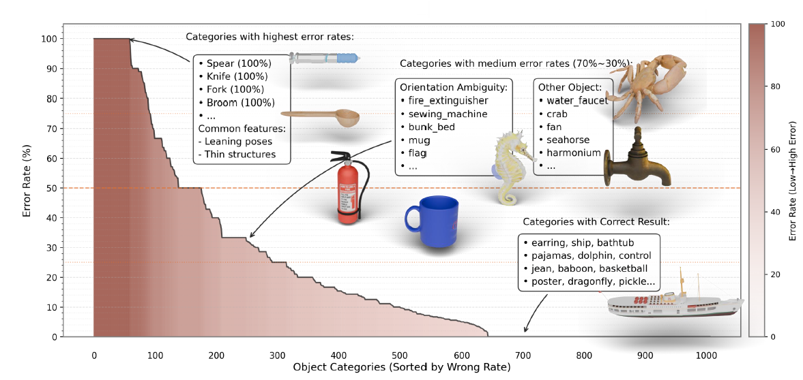

Accurate 3D reconstruction of small, highly reflective surgical instruments is essential for robust perception and safe operation in robot-assisted surgery. However, traditional multi-view reconstruction methods often fail to capture subtle geometry and view-dependent reflections, especially under specular surfaces and fine structures. Motivated by recent advances in Neural Radiance Fields (NeRF), we investigate their potential for reconstructing surgical instruments, where photorealistic rendering serves as an indicator of 3D surface fidelity. Despite their success, conventional NeRFs require dense per-scene training, lack cross-scene generalization, and struggle with specular highlights—limitations that are particularly problematic in surgical scenarios. To address these challenges, we propose GNFM, a Generalizable NeRF with View-Aware Feature Modulation, which extends the Generalizable NeRF Transformer (GNT) to enable robust and generalizable rendering of reflective surgical instruments.

We introduce RSID, a new dataset containing 8 categories of surgical instruments with 2,400 multi-view images, specifically designed to evaluate reconstruction and rendering under highly reflective conditions.
Brief description of the first key idea.
Brief description of the second key idea.
Brief description of the third key idea.
We propose a pipeline consisting of three stages: XXX, XXX, and XXX. The core design is illustrated below.

Our approach outperforms prior methods both quantitatively and qualitatively.

@inproceedings{
lu2025orientation,
title={Orientation Matters: Making 3D Generative Models Orientation-Aligned},
author={Yichong Lu and Yuzhuo Tian and Zijin Jiang and Yikun Zhao and Yuanbo Yang and Hao Ouyang and Haoji Hu and Huimin Yu and Yujun Shen and Yiyi Liao},
booktitle={The Thirty-ninth Annual Conference on Neural Information Processing Systems},
year={2025},
url={https://openreview.net/forum?id=YVOCwQF9k2}
}